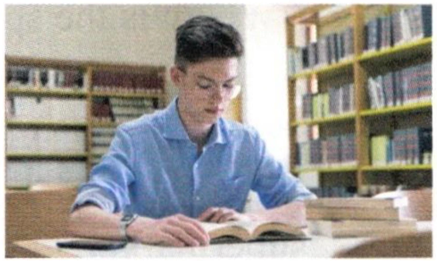
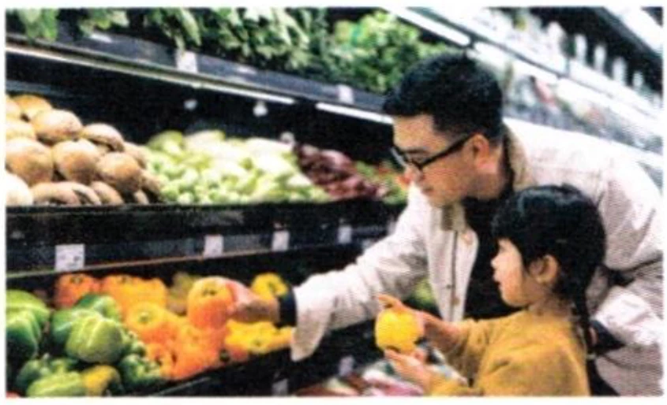
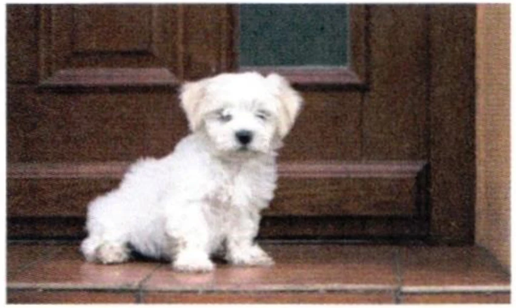

第二部分 Part IIPart IIЧасть II
第4—5题：听问题，选择正确回答。每题听两次。Questions 4-5: Listen to each question and choose the correct answer. Each question will be played twice.Вопросы 4-5: Прослушайте каждый вопрос и выберите правильный ответ. Каждый вопрос будет проигран дважды.
Jīntiān tiānqì zěnmeyàng?例如： 今天天气怎么样？
How is the weather today?Какая сегодня погода?fēicháng rèA 非常热 ✓hěn hǎotīngB 很好听zài hē shuǐC 在喝水
A very hot
B sounds beautiful
C drinking waterA очень жарко
B звучит красиво
C пьёт водуshūA 书wǒ deB 我的tā de diànnǎoC 他的电脑
XīngqītiānA 星期天háizimenB 孩子们qù wàibian chàng gēC 去外边唱歌
第三部分 Part IIIPart IIIЧасть III
第6—8题：听对话，选择最匹配的图片。每题听两次。Questions 6-8: Listen to each dialogue and choose the correct picture. Each dialogue will be played twice.Вопросы 6-8: Прослушайте каждый диалог и выберите подходящую картинку. Каждый диалог будет проигран дважды.
A
B

C

D
